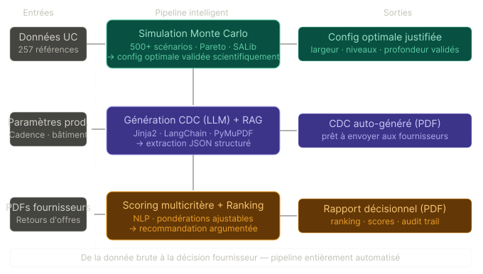

Digitalisation et optimisation systémique de la supply chain interne
Système d'aide à la décision · de la planification au sourcing IA
Dimensionnement surface et conception meubles réalisés dans des fichiers Excel isolés — aucune continuité numérique entre les étapes.
Les dimensions des meubles (largeur, niveaux, profondeur) sont fixées par intuition métier — jamais validées scientifiquement.
Le choix fournisseur se fait par lecture manuelle de PDFs d'offres — subjectif, chronophage, impossible à auditer.
Comment unifier ces étapes dans un pipeline numérique automatisé garantissant une précision mathématique et une aide à la décision objective — de la planification jusqu'au sourcing ?

Flux de données : Ingestion → Optimisation → Génération CDC → Analyse offres → Décision
Calcul automatique des surfaces de stockage selon cadence, foisonnement et type de chariot. Résultat instantané à chaque modification de paramètre.
Algorithme FFD plaçant 119 UC dans le minimum de meubles, en respectant les contraintes de groupement par poste, poids et dimensions.
500+ scénarios testés pour valider scientifiquement les dimensions des meubles via analyse de sensibilité (SALib · indices de Sobol). Le résultat : 1 450 mm × 3 niveaux est le point Pareto optimal — justifié mathématiquement, plus arbitraire.
Le CDC est lu par le LLM qui identifie les exigences techniques, commerciales et contractuelles — sans configuration manuelle. La grille de scoring est générée dynamiquement.
RAG · LangChainChaque offre fournisseur (PDF) est comparée à la grille. Conformité sémantique, prix, délais, certifications — score 0-100 par critère et global.
sentence-transformersRanking fournisseurs avec justification LLM de chaque position. Dashboard what-if : ajuster les pondérations recalcule le classement en temps réel.
ReportLab · Plotly3 modes selon la politique SI : (1) Anonymisation avant envoi LLM · (2) LLM local via Ollama (zéro donnée hors réseau) · (3) Azure OpenAI sur tenant privé client (RGPD · ISO 27001). Le code bascule entre les modes via une seule variable d'environnement.
Modèle open-source local · zéro fuite de données
Modèle alternatif · validation de l'agnosticisme
CDC meubles de kitting généré automatiquement depuis la config optimale. Offres fournisseurs meubles industriels analysées et scorées. Pipeline complet de bout en bout démontré.
Domaine industriel automobileL'architecture est agnostique au domaine — les critères sont extraits dynamiquement depuis n'importe quel CDC. Aucune reconfiguration requise pour un nouveau secteur.
Équipements · Services · BTP · ITCe composant constitue un accélérateur réutilisable que Capgemini Engineering peut proposer à tout client industriel réalisant des appels d'offres — réduisant un cycle d'analyse de plusieurs jours à quelques minutes, avec un audit trail complet et une décision objectivement justifiée.
Sem. 1–2 · Simulation Monte Carlo complète & interface Streamlit
Sem. 3–4 · Génération CDC auto + pipeline RAG robuste
Sem. 5–6 · Scoring NLP · rapport PDF · déploiement Azure
Validation souhaitée pour étendre le périmètre aux 3 modules proposés et positionner l'AO Analyzer comme accélérateur réutilisable dans les missions Capgemini Engineering.
Merci de votre attention. — Questions & retours bienvenus.